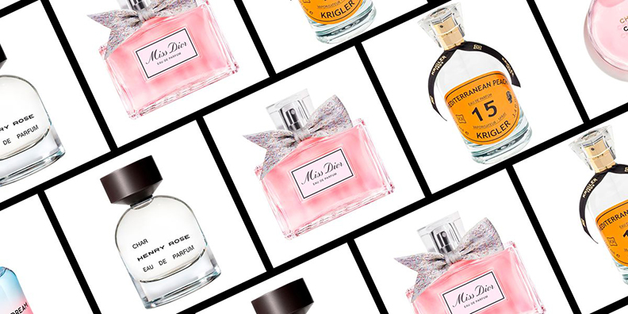
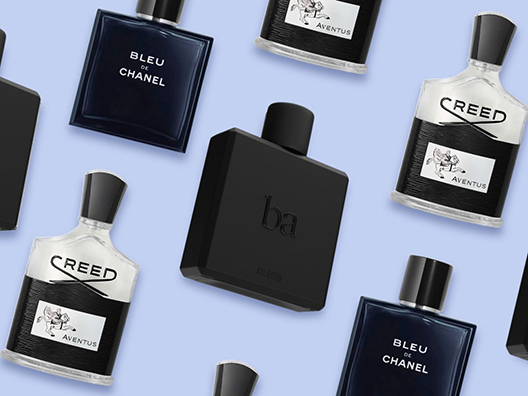
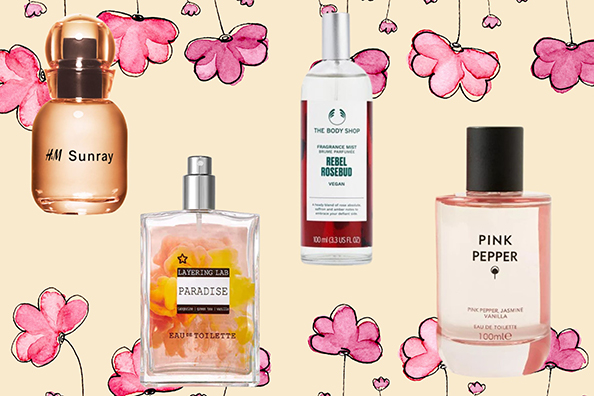
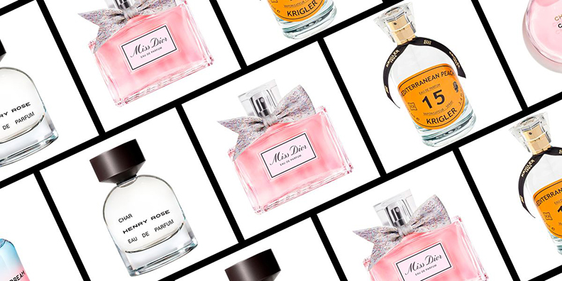
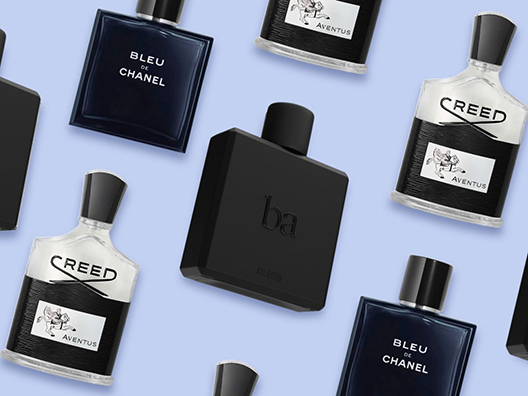
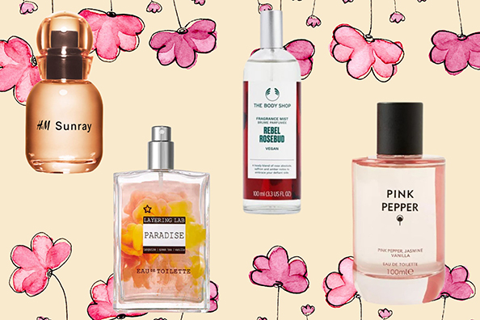

향수의 어원
 향수는 어원인 라틴어 ‘per fumum’은 ‘연기를 통한다’는 의미를 담고 있는 향수는 인류가 최초로 사용한 화장품이라고 볼 수 있습니다. 약 5,000년 전의 고대 사람들이 종교적 의식, 곧 신과 인간과의 교감을 위한 매개체로 사용한데서부터 시작되었습니다. 향수 원액의 농도에 따라 파르푕, 오드파르푕, 오드투알레트, 오드콜로뉴 등으로 나눌 수 있습니다.
향수는 어원인 라틴어 ‘per fumum’은 ‘연기를 통한다’는 의미를 담고 있는 향수는 인류가 최초로 사용한 화장품이라고 볼 수 있습니다. 약 5,000년 전의 고대 사람들이 종교적 의식, 곧 신과 인간과의 교감을 위한 매개체로 사용한데서부터 시작되었습니다. 향수 원액의 농도에 따라 파르푕, 오드파르푕, 오드투알레트, 오드콜로뉴 등으로 나눌 수 있습니다.
 




